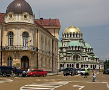
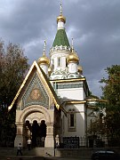

Disclaimer: These pages are not actively maintained, and some of the practical information on the site is out of date. I am working on a new version of the site that will focus more on my photos and memories of travel in Southeast Europe, and less on practical details that too easily become obsolete. In the meantime, please treat the information here with caution.
Sofia
Alexandâr Nevski Cathedral

Pl. Narodno Sabranie
Sofia is not one of Europe's most glamorous capital cities. It was only a small town until chosen as the capital of newly liberated Bulgaria in 1878, so it lacks the historical pedigree of Plovdiv or Veliko Târnovo. Modern times have not been entirely kind to it either - you don't have to walk far from the centre to find cracked pavements and underlit streets. But that doesn't mean you should ignore it completely: it has a few worthwhile attractions, and its understated charm can be seductive, especially when the warm air of the South makes its way over the mountains and the locals stroll along the wide boulevards under the chestnut trees.
Central Sofia
The Alexandâr Nevski Memorial Church would make its presence felt in any city. In an understated place like Sofia it sticks out like - well, like a gigantic white building topped with enormous golden domes. On a sunny day the light glinting off the domes can catch your eye from every corner of the city, and even as far away as Mount Vitosha. It's a relatively modern building - the gold leaf was donated by the Soviet Union in 1960 to commemorate Bulgarian-Russian collaboration in turfing out the Turks. The interior is rather dark in typical Balkan Orthodox style, enhancing the mystical atmosphere but making it hard to appreciate the works of art that cover its walls. An extravagantly bearded God the Father makes his presence felt in the dome, but only the golden halos of the saint really stand out against the prevailing gloom lower down. The crypt houses a museum of icons.
South and west of the church, most of Sofia's other important buildings are linked by a yellow brick road. The National Assembly, National Theatre, and cheerful Russian Church are all in this area. The Changing of the Guard at the Presidency building draws crowds of tourists on the hour (but a crowd of tourists in Sofia consists of about a dozen people). Nearby is the Largo, surrounded by Communist-era buildings - thankfully on a more human scale than their equivalents in some other Eastern Bloc capitals. This part of the city is especially pleasant to stroll around at the weekend when there is little traffic. It seems to have been renovated in the last few years and is in generally better condition than the rest of the city - although someone really should wash the flags of NATO member states in the Largo.
Sofia doesn't have many old buildings, but you can find a few old churches near the western end of the Largo. Walking north from Sv. Nedelya, the most prominent of the churches, bring you to the former TSUM department store. It's now a fancy shopping mall whose doormen wear uniforms even more absurd than those of the Presidential Guard. The Banya Bashi Mosque and the Synagogue are not far away. Thus this small area contains the temples of four great faiths: Christianity, Islam, Judaism and Consumerism.
Heading south along Vitosha Boulevard, an important shopping street, brings you to the wide open spaces of Bulgaria Square. Although the 1300 Years Monument looks as if it could collapse at any moment, this is a pleasant place to join the residents of Sofia for a stroll on a sunny day - perhaps with an ice cream from the chain of kiosks proudly advertising that their product is 'not like conveyor made'.
National Theatre

Russian Church
Suburban Sights
The National History Museum is marooned in the residential suburbs south of Sofia. Getting there must be too much effort for most people, as I had the place to myself when I visited - or perhaps most potential visitors get knocked down crossing the main road in front of the museum. I found the museum's collection less interesting than Varna's Archaeological Museum - many of the older items are replicas rather than originals, and English captioning is patchy. The last exhibit brings the story up to the official end of Bulgarian history in ... 1946. This hints at one of the museum's charms - it has something of a time warp quality, with few clues that the Communist period ever came to an end. The building is a striking example of Communist-style opulence. There are carved wooden ceilings, acres of marble, enormous chandeliers and vast picture windows with views of Vitosha - yet somehow none of this overcomes the impression of brownness that emanates from so many buildings of its era.
Boyana Church is a couple of kilometres south of the museum. Like many mediaeval churches in the Balkans, its small and rather plain exterior conceals an artistic treasure - the interior frescos are on the UNESCO World Heritage list. The frescos are beautiful but you won't have much time to appreciate them as visits are strictly limited to ten minutes. With an entry fee of five euro for foreigners it must be the most expensive attraction in the Balkans on a per-minute basis. A visit to the church could be combined with a stroll through the forests of Mount Vitosha, directly uphill behind the church.
Practicalities
Sofia's Central Train Station seems designed to give the worst possible impression to new arrivals. Even a colourful McDonald's counter fails to relieve the overall drabness, the platform numbering is pointlessly complicated, and most timetable displays don't work. Be wary of the characters who hang around the station offering 'free' help to confused-looking travellers. All you really need to know is that tickets for the northern half of Bulgaria (Varna, Ruse, Vidin) are sold in the main hall; the ticket counters for to other destinations are downstairs; leave yourself time to find the correct platform.
The shiny new Central Bus Station, in contrast, suggests that someone has realised the benefits of providing travellers with a more comfortable environment - a huge improvement over the chaotic parking lot that used to serve as the main bus stations. Touchscreen terminals provide timetable information in English. It's not all good news, though: the problem is that not all buses depart from the central station. There are a number of smaller terminals in inconvenient suburban locations - you are most likely to need these if you are heading south from Sofia. Most buses to Bansko leave from the Ovcha Kupel station, while Samokov is served from the Yug station, grimly located beneath a flyover.
Public transport within Sofia is comprehensive. Wherever you need to go, there's a very good chance that a tram, trolley, or bus will go there reasonably frequently. There is also a metro system, but it's too limited to be of use to visitors, unless you use its central terminus as a convenient way of crossing the street. It's easy to find high quality city maps, showing public transport routes in great detail, in bookshops and kiosks - very useful if you want to visit places like Boyana or Mount Vitosha. Both Boyana Church and the National History Museum can be reached on public transport, but getting to the church involves at least one change - if you're the impatient type you might prefer a taxi.
What they said about Sofia ...
There's something about Sofia's ramshackle, neutral tenor that I find immediately pleasant. Perhaps it's the undemanding, modest size and scale or the teasing combination of Eastern European elements and strong, southern heat and light.
- Eva Hoffman, Exit Into History, 1993
When one moves about the architectural spaces of modern, now post-Communist, Bulgaria one feels dislocated, puzzled, and strangely insufficient, as if one were riding a bicycle down an airport runway. In Sofia, a huge esplanade leads to a mammoth national arts centre; but no one is there. You see the middle of a bridge, but neither its beginning nor its end are built, so that it appears to you not as a bridge but as the symbol of a bridge.
- Scott Malcomson, Empire's Edge, 1994
The peeling stucco of its turn-of-the-century buildings lends an air of Balkan dilapidation to the capital's wide, tree-shaded boulevards.
- The Rough Guide to Bulgaria, 2002
Its shady gold-brick streets and parks give it energy and confidence that lures some travellers into its artier nooks for weeks.
- Lonely Planet Eastern Europe, 2005
Read more about Mount Vitosha and other excursions from Sofia: Around Sofia
More photos of Veliko Târnovo in my Bulgaria Galleries